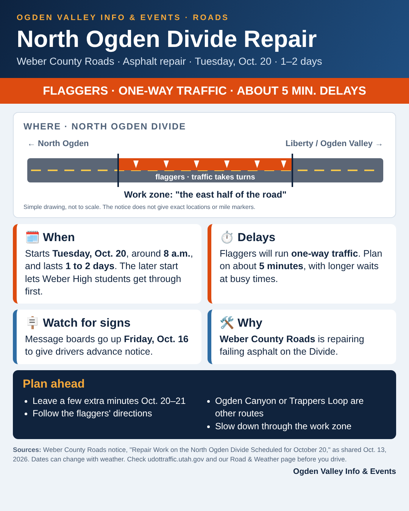

Starts Tuesday, Oct. 20, around 8 a.m. Work lasts 1 to 2 days. Message boards go up Friday, Oct. 16.
What: Weber County Roads is repairing failing asphalt on the North Ogden Divide.
Where: The closure affects the east half of the road. Flaggers will run one-way traffic.
When: Work starts around 8 a.m. so Weber High School students can get through first.
Delays: Plan on about 5 minutes, with longer waits possible at busy times. Ogden Canyon and Trappers Loop are other routes.
Download the graphic to share